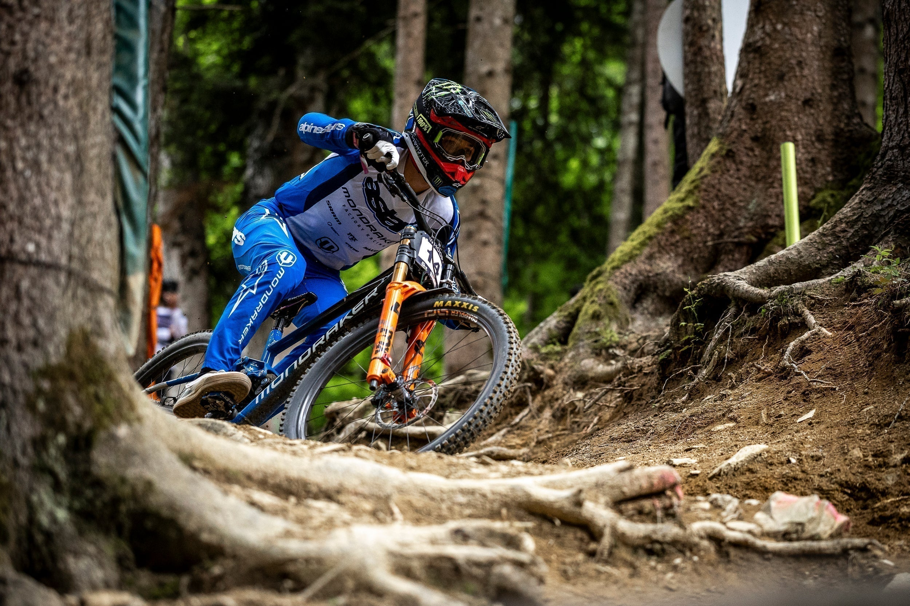

Posición del ciclista
Mantener una posición equilibrada ayuda a controlar la bicicleta y adaptarse a las irregularidades del terreno.

La técnica permite conducir con mayor control en los senderos.
Mantener una posición equilibrada ayuda a controlar la bicicleta y adaptarse a las irregularidades del terreno.
